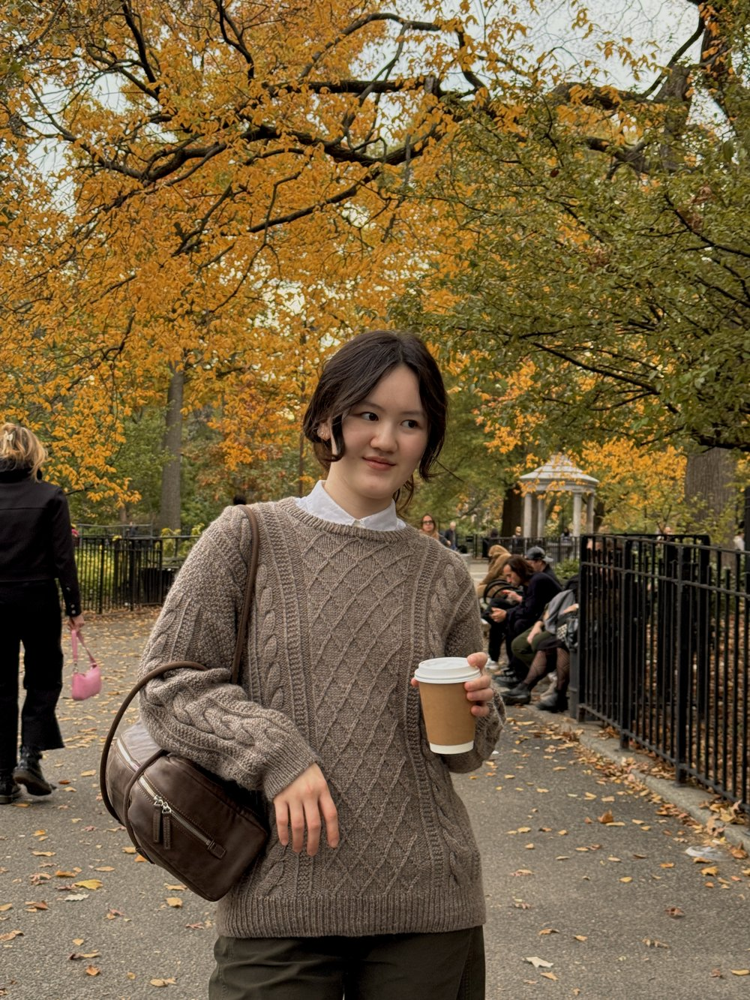
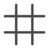
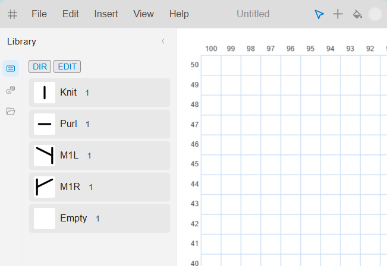

Hello there
I knit and make contentt.
I also have a free knitting grid app.
Always learning new things about knitting as I post about my process and findings on my social media pages.

A COOL KNITTING APP

A free grid app that helps create, edit, and track knitting charts for pattern designers or knitters.
v1.1.1 - Not yet code signed, a bit broke these days
